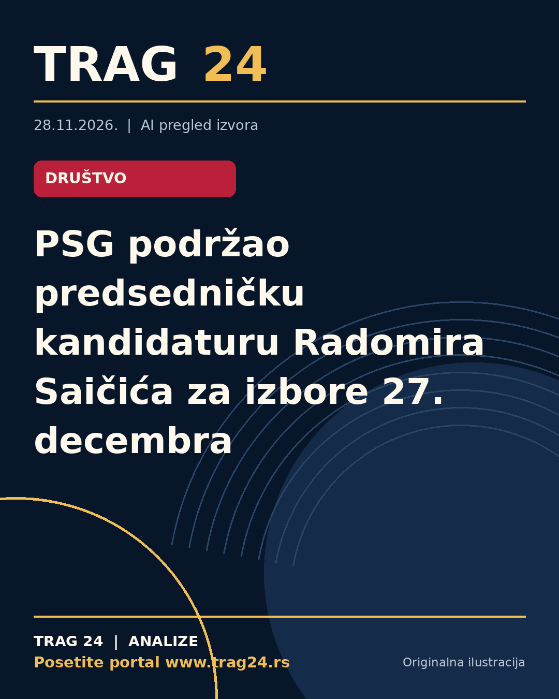

PSG podržao predsedničku kandidaturu Radomira Saičića za izbore 27. decembra

ŠTA SE DOGODILO
Predsedništvo Pokreta slobodnih građana (PSG) odlučilo je da podrži kandidata Studentske liste Radomira Saičića na predsedničkim izborima koji će se održati 27. decembra.
HRONOLOGIJA
Odluka o podršci doneta je na večerašnjoj sednici predsedništva PSG-a i predstavlja nastavak ranije donete odluke o podršci Studentskoj listi. Ovim je PSG pokazao kontinuitet svoje dosadašnje politike i strateških odluka u vezi sa izbornim aktivnostima.
ŠTA NAVODE IZVORI
Svi izvori ističu da je ova odluka izraz doslednosti PSG-a da podrži Studentsku listu i njenog kandidata Saičića. Takođe, PSG navodi da su obnova demokratskih institucija, uspostavljanje vladavine prava i stvaranje društva u kome institucije rade u interesu građana ključni zadaci Srbije. PSG planira da i dalje deluje u skladu sa svojim programskim načelima i da se zalaže za demokratsku, slobodnu i evropsku Srbiju, uz spremnost na saradnju sa svim političkim i društvenim akterima sa kojima deli ove ciljeve.
ŠTA JE POTVRĐENO
Potvrđeno je da je kandidatura Radomira Saičića za predsedničke izbore 27. decembra zvanično podržana od strane predsedništva Pokreta slobodnih građana. Takođe je potvrđeno da ta podrška predstavlja nastavak prethodne političke odluke PSG-a o saradnji sa Studentskom listom.
ŠTA NIJE POTVRĐENO
Nisu dostupne informacije o drugim kandidatima ili eventualnim koalicijama na predsedničkim izborima, kao ni o detaljima samog izbornog procesa ili drugim aktivnostima PSG-a u ovom kontekstu.
ŠTA OSTАJE OTVORENO: Ostaje da se vidi kakav će biti dalji tok predizborne kampanje, kao i eventualni odziv birača na kandidaturu Radomira Saičića. Takođe nije poznata reakcija drugih političkih aktera na ovu odluku PSG-a. Nije poznato ni da li će doći do promena u podršci ili daljih savezništava do samih izbora.
Izvori
- https://insajder.net/prenosimo/psg-podrzao-predsednicku-kandidaturu-radomira-saicica
- https://nova.rs/vesti/politika/psg-podrzao-predsednicku-kandidaturu-radomira-saicica/
- https://www.danas.rs/vesti/politika/psg-podrzao-radomira-saicica/
Ova analiza je pripremljena uz pomoć veštačke inteligencije na osnovu javno dostupnih izvora. Navodi izvora nisu nužno nezavisno potvrđeni.